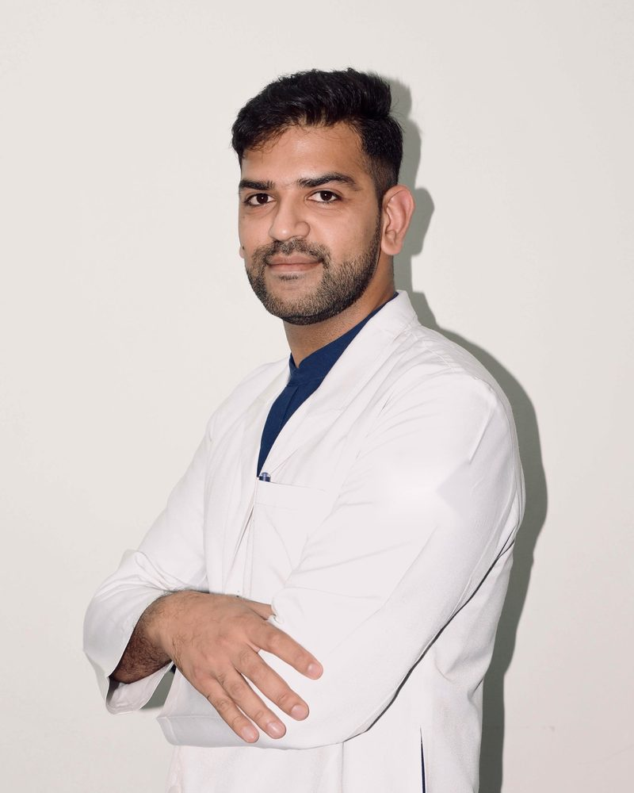

Loading today's tip…
Gastroenterologist · Gurugram
Clear answers about your stomach, liver and digestion.
Many gut and liver problems are easy to treat when they are caught early, and many others are harmless once properly checked. This page explains the common ones in plain language, so you know what to watch for and when to see a specialist.
DrNB Gastroenterology, Medanta
All-India Gold Medal
Advanced Fellowship in EUS & ERCP

Gut Health Daily
One small habit for a healthier gut, every day
A new tip each morning on diet, digestion and liver health, written for everyday Indian kitchens and routines, plus a daily tip for people living with IBS. Share the ones you find useful with your family.
These are general guides. Your own diet may need changes based on your reports, other conditions and medicines.
Symptom guide
What is my body telling me?
Tap a symptom to see what commonly causes it and how soon you should see a doctor. This is a guide to help you decide, not a diagnosis.
Routine visit
Within a few days
Today
Conditions explained
Common gut and liver problems
Tap a part of the digestive system to see the conditions that affect it. Open any card to read the signs, what helps, and when to get checked.
Tap an organ. Tap it again to show all.
Tests & procedures
What to expect from an endoscopy
Most procedures use a thin, flexible tube with a camera. There are no cuts, and most people go home the same day. The simple drawings show where the scope goes and what it does.
Myths and facts
Things patients often believe
Dr. Kshitij LochabConsultant Gastroenterologist & Therapeutic Endoscopist
I treat diseases of the food pipe, stomach, intestines, liver, gallbladder and pancreas. My special training is in advanced endoscopy, which lets many problems that once needed surgery be treated through a scope instead. I take time to explain your condition and your options, so that every decision is one we make together.
Areas of care
Fatty liver & hepatitisCirrhosis & GI bleedingBile duct & pancreasAcidity & ulcersIBS & IBDColon polyps & screeningSwallowing problems
- Current roleAssociate Consultant, Gastroenterology & Therapeutic Endoscopy, Apollo Hospitals, Golf Course Road, Gurugram
- TrainingDrNB Gastroenterology, Medanta – The Medicity, Gurugram (Institute of Digestive & Hepatobiliary Sciences)
- AwardAll-India Gold Medal, DrNB Gastroenterology
- FellowshipAdvanced Fellowship in Endoscopic Ultrasound (EUS) & ERCP
- ExperienceFormerly Associate Consultant, Medanta – The Medicity
- RegistrationHaryana Medical Council, Reg. No. HN-23524
- ResearchWork on variceal bleeding, EUS-guided procedures and complex oesophageal strictures, presented at the World Congress of Gastroenterology 2026
Before you visit
Common questions
Do I need a referral to see a gastroenterologist?
No. You can book directly. If another doctor has seen you, bring their notes and prescriptions.
What should I bring to my first consultation?
All previous reports, scans, endoscopy and biopsy reports, and a list of every medicine and supplement you take. Photos of reports on your phone are fine.
Do I need to come fasting?
Not for a consultation. Fasting is needed only for procedures such as endoscopy, and for some blood tests. You will be told in advance.
Are video consultations available?
Yes. They work well for follow-ups, reviewing reports and diet advice. A first visit for new symptoms is better in person, so that you can be examined.
Is endoscopy safe?
Endoscopy is a routine and very safe procedure. Serious complications are uncommon. The benefits and risks for your situation are explained before any procedure, and you can ask any question you have.
Where are endoscopy and other procedures done?
Procedures are done in a fully equipped hospital endoscopy unit with monitoring and anaesthesia support. The details are shared at your consultation.
Visit the clinic
Book a consultation
Bring any previous reports, scans and a list of the medicines you take. If you have had an endoscopy before, bring that report too.
Appointments & video consultations
+91 96671 04882
Call or WhatsApp
Can't travel? Video consultations are available for follow-ups and for reviewing reports.
Arcura Clinic
M2K Corporate Park & Shopping Plaza
14, Mayfield Garden, Sector 51
Gurugram, Haryana 122018
M2K Corporate Park & Shopping Plaza
14, Mayfield Garden, Sector 51
Gurugram, Haryana 122018
Visited recently? You can share your experience on Google. It helps others find the right care.
Also consulting at Apollo Hospitals, Golf Course Road, Gurugram.